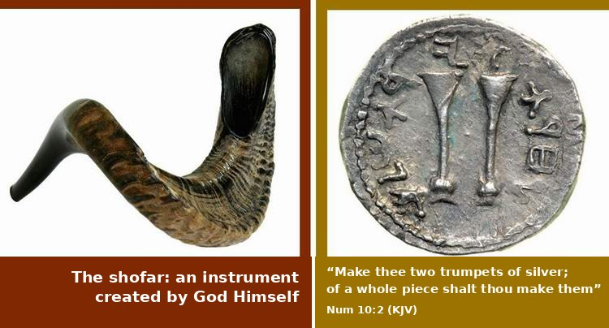

Shofar or Trumpet? Let's Check
Shofar or trumpet? Let's check what the text of Scripture says
Today we are in the middle of the feast of the New Year 5775, which according to the Bible is the Feast of Trumpets. That is what it is usually called in English Bibles. Together with all who have doubts, I would like to clear something up!

More and more Christian congregations and individual believers are taking an interest in one of the most Jewish of symbols, the shofar. It must be said that it is also (along with the menorah) the most ancient of Jewish symbols. But the trouble begins if you do not take anyone's word for it and decide to open your Bible to find out what all the fuss is about. The puzzlement starts the moment you begin searching for this very shofar in the familiar English translations, from the King James Version to the NIV. You will not find a single mention of the shofar!
Indeed, if you type the word SHOFAR into the search box of an English Bible, you will find nothing of the kind. Naturally the question arises whether the Jewish tradition is right to give the shofar such great importance. Perhaps it is only tradition? Folklore unknown to Holy Scripture?
If we make another attempt and look for the word "TRUMPET" in the text of Scripture, our search will of course be rewarded, and we will find many places containing this word. And of course, even without searching, almost all of us remember the name of the biblical feast, the Feast of Trumpets. It is one of the Feasts of the LORD, for which the whole adult population of Israel made aliyah (went up) to Jerusalem to worship the Most High.
But if we look at the Strong's number of this very word "TRUMPET" and search not by the word but by the number (any Bible with Strong's numbers will do; on the free Blue Letter Bible website, the page for each Strong's number lists every verse where the word occurs), it turns out that things are not so simple. In fact it turns out that there are only 27 verses in the whole Bible with "pure-blooded" trumpets, the very ones God commanded Moshe to make of silver in order to call the people together and so on. In most places the translated word "TRUMPET" conceals a real SHOFAR. Which is what we set out to prove.
| Hebrew word | Strong's | Strong's definition | Occurrences | Verses | KJV renders it |
|---|---|---|---|---|---|
| חֲצֹצְרָה CHATSOTSRAH | H2689 | a trumpet (from its sundered or quavering note) | 29 | 27 | trumpet |
| שׁוֹפָר SHOFAR | H7782 | a cornet (as giving a clear sound) or curved horn | 72 | 63 | trumpet, cornet |
Counted in the Westminster Leningrad Codex (Hebrew text with Strong's numbers, Open Scriptures Hebrew Bible). Definitions from Strong's Hebrew Dictionary.
The 27 verses with the silver trumpet, CHATSOTSRAH: Num 10:2, 8, 9, 10; 31:6; 2 Kgs 11:14; 12:13; 1 Chr 13:8; 15:24, 28; 16:6, 42; 2 Chr 5:12, 13; 13:12, 14; 15:14; 20:28; 23:13; 29:26, 27, 28; Ezra 3:10; Neh 12:35, 41; Ps 98:6; Hos 5:8. Most of the other places where an English Bible says "trumpet" have SHOFAR, the ram's horn. The first is Exod 19:16: "and the voice of the trumpet exceeding loud".
There are more than twice as many shofars in Scripture as trumpets. Not to mention that the symbolism of the SHOFAR and of the TRUMPET differs considerably (for more on this, see the article "The High Calling" and the film "The Voice of the Shofar").
So what shall we say? It really is useful to look into the original text. Then one can begin to analyse and reflect on the meaning of why this or that word is used.
For more on the symbolism of the SHOFAR and how it differs from the silver trumpet, see the film
See also the articles on the shofar:
— part 2
— part 3
— part 4
— part 5
And the videos:
Author: Ephraim Kalish
 The Music of Jewish Texts. Victoria Hanna
The Music of Jewish Texts. Victoria Hanna Different Understandings
Different Understandings